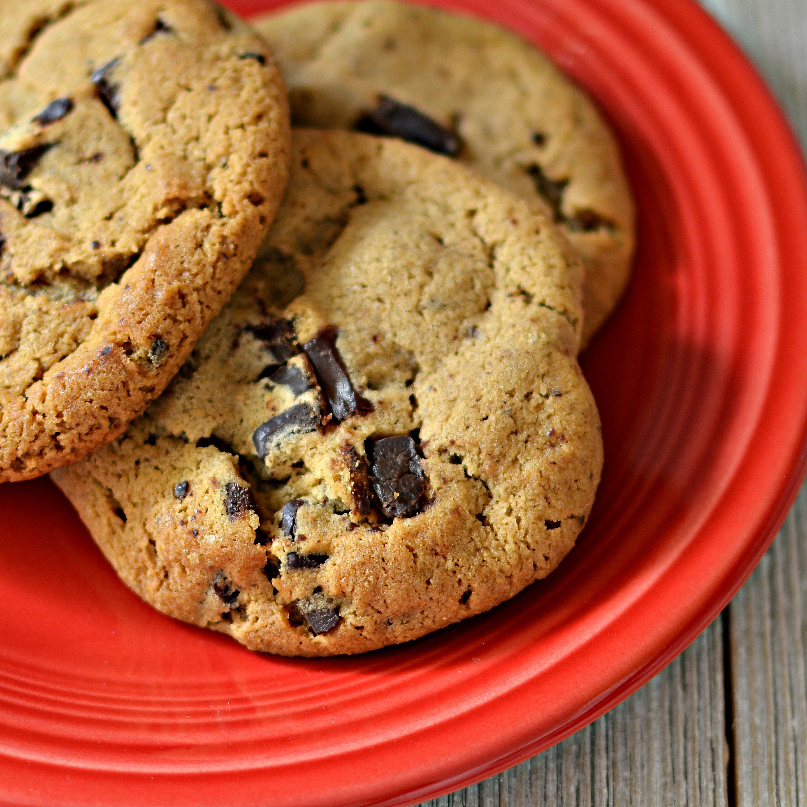

Award Winning Soft Chocolate Chip Cookies

Description
A chewy, moist-centered cookie with barely crisp
edges, flecked with semi-sweet chocolate chips.
Ingredients
- 4 1/2 cups all-purpose flour
- 2 teaspoons baking soda
- 2 cups butter, softened
- 1 1/2 cups packed brown sugar
- 1/2 cup white sugar
- 2 (3.4 ounce) packages instant vanilla pudding mix
- 4 eggs
- 2 teaspoons vanilla extract
- 4 cups semisweet chocolate chips
- 2 cups chopped walnuts (Optional)
Steps
-
Preheat the oven to 350 degrees Farenheit
(175 degrees Celcius)
- Mix together flour and baking soda in a medium bowl.
-
Mix together butter, brown sugar, and white sugar in a
separate bowl. Beat in instant pudding mix until blended.
Stir in eggs and vanilla.
-
Add flour mixture to the butter mixture until well
incorporated. Fold in chocolate chips and nuts.
-
Drop cookies by rounded spoonfuls onto ungreased
cookie sheets.
-
Bake in batches in the preheated oven until the
edges are golden brown, 10 to 12 minutes,
switching racks halfway through.